Chapter 11 Themes, Colors, Correlations, Boxplots, Violins and Bars (Part 1)
Citing the Guide and the Package
If you have used smplot2 for your visualization routines, please cite one of the papers below:
Min, S. H. (2024). Visualization of composite plots in R using a programmatic approach and smplot2. Advances in Methods and Practices in Psychological Science, 7(3). [pdf] [codes]
Min, S. H., & Zhou, J. (2021). smplot: an R package for easy and elegant data visualization. Frontiers in Genetics, 12, 802894. [pdf] [codes]
Getting Started
This and the next chapters discuss in brief of all visualization functions of smplot2. Most of these functions have already been described in depth in the preceding chapters. Those that have not, such as sm_hgrid(), sm_hist() and sm_bland_altman() will be discussed in detail.
If you seek certain bits of information about the package on this page, the best is to use it via CTRL + F and type certain key words as this page will be long. This page is meant to be a manual, not a linear tutorial. So I recommend that the reader not read this page linearly.
This chapter does not describe analysis functions of smplot2, such as sm_effsize(), sm_power() and sm_auc(); these functions are described in the Data Analysis section of the book.
If you are still not sure about any of the functions, please type ? before the function names, ex. ?sm_bar.
11.2 How ... and xxx.params arguments work

Figure 11.1: smplot2’s parameters
These are both additional arguments in the visualizing functions of smplot2. xxx.params comes in various forms, such as:
err.params: controls the error bar’s appearance.point.params: controls the points’ appearance.line.params: controls the lines’ appearance.avgLine.params: controls the mean line’s appearance.avgPoint.params: controls the average point’s appearance.bar.params: controls the bar’s appearance.boxplot.params: controls the boxplot’s appearance.violin.params: controls the violin’s appearance.
... is another additional argument that I refer to as the generic parameter. It can affect different components of a graph all at once if there is no default.
- However, these
xxx.paramscan have defaults on their own depending on the function. To remove the defaults, arguments have to be written in this formatxxx.params = list()within the functions.
This is probably the most substantial difference between smplot and smplot2.
11.3 Modifying the default aesthetics
Users can modify the default appearance of the visualization functions from the smplot2 package in two different ways:
First, they can modify one component of a graph while keeping the rest of the default the same (second panel of the figure). This involves re-specifying one aspect of the appearance, such as the bar’s alpha level here.
Second, they can reset the defaults by setting
forget = TRUEand callinglist()for a certain plot component, such asbar.paramsof the bar plot (third panel). This will ensure that the defaults of the plot component (i.e., bar) are forgotten, so users should re-specify each part of the appearance of the bar. This allows users to be more flexible with the aesthetics. [Same as previous version of smplot2]
ggplot(data = df, mapping = aes(x = Day, y = Value, color = Day)) +
sm_bar() +
scale_color_manual(values = sm_color("blue", "orange")) +
ggtitle("Bar's default in smplot2") -> p1
ggplot(data = df, mapping = aes(x = Day, y = Value, color = Day)) +
sm_bar(bar.params = list(alpha = 0.3)) +
# Previously, needed to write:
# bar.params = list(alpha = 0.5, width = 0.7, color = 'transparent', fill = 'gray80')
scale_color_manual(values = sm_color("blue", "orange")) +
ggtitle("Bar's default with new alpha") -> p2
ggplot(data = df, mapping = aes(x = Day, y = Value, color = Day)) +
sm_bar(bar.params = list(), forget = TRUE) +
# As previously, forgets defaults of a plot component (ex. bar) when list() is called.
scale_color_manual(values = sm_color("blue", "orange")) +
ggtitle("Bar's default forgotten") -> p3
sm_put_together(list(p1, p2, p3), ncol = 3, nrow = 1, tickRatio = 1)
In the visualization functions of smplot2, argument for
aesthetics that are not re-specified in list() follow the
defaults of smplot2. If only one of them gets re-specified,
then that one will get modified as specified but others will still
retain the default appearance.
11.4 Color palette
Unlike some other visualization packages, smplot2 only offers single color palette (only up to 20 colors). This choice of design was partly motivated by the fact that too many choices would often confuse the users, as I have found myself doing so.
These 20 colors can be accessed using the function sm_palette().
sm_palette()accepts the number of colors (up to 20) and returns the hex codes accordingly.
A specific color can be called upon by the function sm_color().
sm_color()accepts the character string of the color name.

Figure 11.2: smplot2’s color palette
These colors make up the entire palette of smplot2.
## [1] "#7f404a" "#5b4080" "#408073" "#8c994d" "#cc9666" "#cc1489" "#1262b3" "#cc3d3d" "#da73e6" "#66b1cc"
## [11] "#0f993d" "#7f5d0d" "#7b3dcc" "#45e0e6" "#63e617" "#e57717" "#c9b9c6" "#ffe764" "#ffb359" "#9ee1a8"If you only need 5 colors, then type this instead.
## [1] "#cc1489" "#1262b3" "#5b4080" "#e57717" "#0f993d"This is the hex code for darkred.
## [1] "#7f404a"You can also call two (same / different) colors at the same time.
## [1] "#7f404a" "#7f404a"## [1] "#7f404a" "#408073"If you want to use 1 color (ex. darkred) from smplot2 and another color (#b37982) from somewhere else, you will need to resort to using their hex codes.
Create a variable that stores these two colors using <-.
## [1] "#7f404a" "#b37982"my_colors have two colors: one from smplot2 and another from somewhere else.
11.5 Graph themes
smplot2 offers many graph themes. They are minimalistic and have similar font size across titles and texts. They are most ideal when the panel is square (ratio = 0.95- 1.05). They also have arguments borders and legends, which could be used to remove / add borders (borders = FALSE / borders = TRUE) or remove / add legends (legends = FALSE / legends = TRUE). These are most appropriate for scientific publications.
sm_hgrid()is the default theme for most visualizing functions of smplot2, such assm_boxplot(),sm_bar(),sm_forest()etc. It has major horizontal grids.sm_vgrid()has major vertical grids and is not used as default for the visualizing functions.sm_hvgrid()has both major horizontal and vertical grids. This is identical tosm_hvgrid().This theme is most appropriate when the x- and y-axes have the same range.
sm_hvgrid_minor()has vertical and horizontal major and minor grids.sm_classic()has no grid and half-border. This is a classic ㄴ shape. This is useful for all types of plots. The default theme ofsm_bland_altman()issm_classic().sm_minimalhas no grid. This is useful when a graph has a lot of annotation, such as texts and arrows.sm_slope_theme()is a theme for a slope chart. It removes everything except the y-axis. This is the default theme ofsm_slope().
Let’s explore these themes one-by-one. First, let’s create p1, which has the default theme of ggplot2.
library(tidyverse)
p1 <- ggplot(data = mpg, mapping = aes(x = displ, y = hwy, color = class)) +
geom_point(size = 2)
p1
We can incorporate sm_hvgrid().

We can also remove borders and legends by setting them as FALSE.

You can also apply smplot’s colors by using scale_color_manual().
We can also apply sm_hgrid().
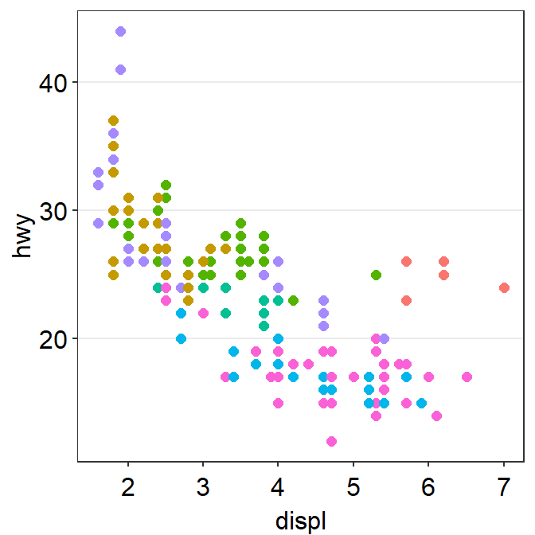
Let’s try sm_vgrid().

You can remove the legend as shown below.
sm_classic() looks very clean as well.
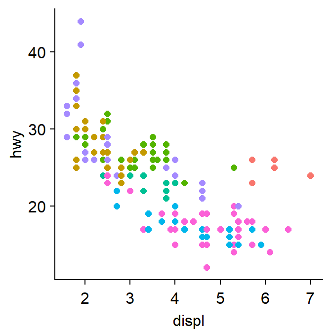
You can add a legend.
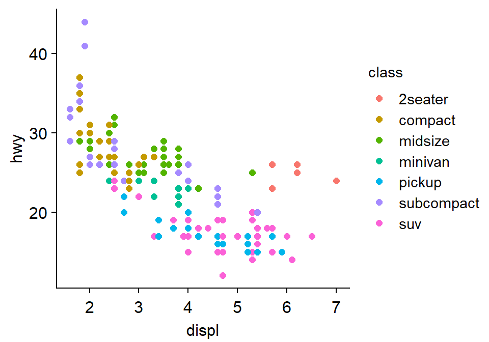
Another choice is sm_minimal(), which has no grids.

You can choose to include the legend in sm_minimal().
11.6 Correlation plot - sm_statCorr() and sm_corr_avgErr()
When using ggplot2 to plot correlation, the data frame has to have at least two columns, each of which for x and y axes.
p1 <- ggplot(data = mtcars, mapping = aes(x = drat, y = mpg)) +
geom_point(shape = 21, fill = sm_color("green"), color = "white", size = 3)
p1
In the data frame mtcars, one column is for the x-axis (drat), another column is for y-axis (mpg). In short, the data frame structure is different to the one used to plot bar sm_bar(), sm_boxplot(), sm_raincloud() etc.
There are two associated functions in smplot2 with correlation.
sm_statCorr()draws the fitted linear regression line, prints theR(or \(R^2\)) andpvalues from the specifiedmethodof correlation test. It also callssm_hvgrid().- Important:
sm_statCorr()recognizes the data for the y- and x-axes from themapping = aes()inggplot()function. Therefore there is no need to providedata,xandyarguments in this function.
- Important:
sm_corr_avgErr()draws the average point with vertical and horizontal error bars. The argumentssm_corr_avgErr(data = ..., x = ..., y = ...)have to be included; these are identical to what are provided inggplot().- Important:
sm_corr_avgErr()does not recognize the data frommapping = aes()inggplot(). Therefore, you should specify the three arguments.
- Important:
11.6.1 sm_statCorr()
sm_statCorr() has various arguments.
fit.paramsfeeds arguments togeom_smooth()control the aesthetics such ascolor,linetype,fullrangeetc. These parameters can be used as part of...the generic parameter.

fullrangecontrols whether the fitted line spans the entire length of the x-axis. Iffullrange = TRUE, it will do so. If not, it will only span between the minimum and maximum x points of the dataset.

corr_methodis the method of correlation test that is to be used. The default is set to the pearson correlation test (corr_method = 'pearson').
separate_byis the string that separates between theR(or \(R^2\)) print and thepprint.
label_xandlabel_ycontrols the location of the statistical annotations.text_sizecontrols their size.
p1 + sm_statCorr(
fit.params = list(
color = "black",
linetype = "dashed"
),
label_x = 2, label_y = 0, text_size = 5, R2 = TRUE
)
11.6.2 sm_corr_avgErr()
datais the variable that contains the data frame.xis the column name of the variable that is plotted in the x-axis.yis the column name of the variable that is plotted in the y-axis.
ggplot(data = mtcars, mapping = aes(x = drat, y = mpg)) +
geom_point(shape = 21, fill = "#0f993d", color = "white", size = 3) +
sm_corr_avgErr(data = mtcars, x = drat, y = mpg) +
sm_hvgrid()
point.params()feeds arguments togeom_point()to setcolor,alpha,sizeetc for the average point.errv.paramsfeeds the arguments togeom_errorbar(), such ascolor,sizeandwidthetc, to plot the vertical (y-axis) error bar.errh.paramsfeeds the arguments togeom_errorbarh(), such ascolor,sizeandheightetc, to plot the horizontal (x-axis) error bar.
ggplot(data = mtcars, mapping = aes(x = drat, y = mpg)) +
geom_point(shape = 21, fill = "#0f993d", color = "white", size = 3) +
sm_corr_avgErr(
data = mtcars, x = drat, y = mpg,
point.params = list(size = 4),
errh.params = list(
height = 1, color = "#1262b3",
size = 0.8
),
errv.params = list(
width = 0.12, color = "#cc3d3d",
size = 0.8
)
) +
sm_hvgrid()
errorbar_typesets the type of the error bar, such as standard error (errorbar_type = 'se'as default), standard deviation (errorbar_type = 'sd') or 95% confidence interval (errorbar_type = 'ci').
ggplot(data = mtcars, mapping = aes(x = drat, y = mpg)) +
geom_point(shape = 21, fill = "#0f993d", color = "white", size = 3) +
sm_corr_avgErr(
data = mtcars, x = drat, y = mpg,
errorbar_type = "se"
) +
sm_hvgrid()
11.6.3 Structure of data frame
As previously mentioned, the structure of a data frame is unique for correlation plot.
- Column 1 has to be the data for x-axis.
- Column 2 has to be the data for y-axis. .
Let’s explore this difference by generating fake dataset and reorganizing it for different plot types.
# Example
set.seed(11) # generate random data
method1 <- c(rnorm(19, 0, 1), 2.5)
method2 <- c(rnorm(19, 0, 1), 2.5)
Subject <- rep(paste0("S", seq(1:20)), 2)
Data <- data.frame(Value = matrix(c(method1, method2), ncol = 1))
Method <- rep(c("Method 1", "Method 2"), each = length(method1))
df_general <- cbind(Subject, Data, Method) # used for sm_bar(), sm_boxplot(), sm_violin(), etc
df_corr <- data.frame(first = method1, second = method2) # used for correlationWe have created two data frames: df_general and df_corr. Let’s take a look at their structures.
## Subject Value Method
## 1 S1 -0.59103110 Method 1
## 2 S2 0.02659437 Method 1
## 3 S3 -1.51655310 Method 1
## 4 S4 -1.36265335 Method 1
## 5 S5 1.17848916 Method 1
## 6 S6 -0.93415132 Method 1Notice that df_general has three columns. The first column is subject, second column is data (i.e., Value) and third column is measurement group.
## first second
## 1 -0.59103110 -0.65571812
## 2 0.02659437 -0.68251762
## 3 -1.51655310 -0.01585819
## 4 -1.36265335 -0.44260479
## 5 1.17848916 0.35255750
## 6 -0.93415132 0.07317058Notice that df_corr has two columns, each of which represents a measurement group.
# correlation plot using data frame 'df_corr'
ggplot(data = df_corr, mapping = aes(x = first, y = second)) +
geom_point(
shape = 21, fill = sm_color("crimson"), color = "white",
size = 3
) +
sm_hvgrid(borders = FALSE) +
scale_y_continuous(limits = c(-2.5, 2.5)) +
scale_x_continuous(limits = c(-2.5, 2.5)) +
sm_statCorr(
color = sm_color("crimson"), fullrange = TRUE,
label_x = -2.2, label_y = 2.3,
linetype = "dashed"
) +
ggtitle("Correlation plot") +
xlab("Method 1") +
ylab("Method 2")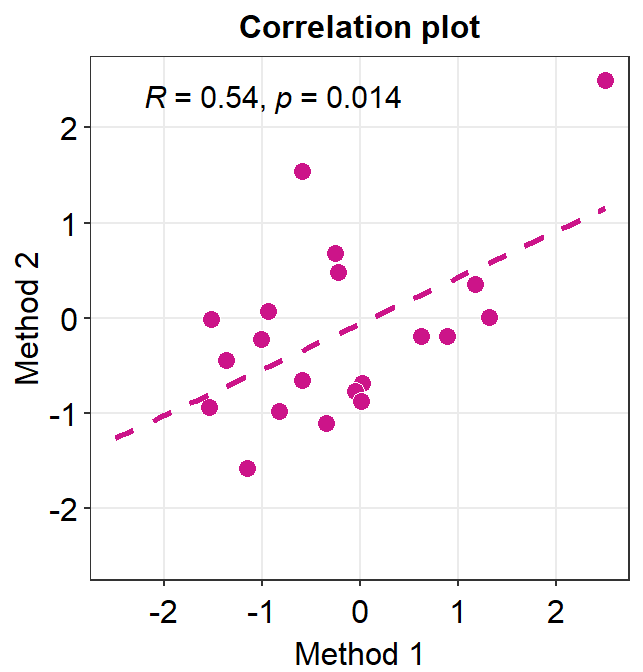
# bar graph using data frame 'df_general'
ggplot(data = df_general, mapping = aes(
x = Method, y = Value,
color = Method
)) +
sm_bar() +
scale_color_manual(values = sm_color("crimson", "green")) +
scale_y_continuous(limits = c(-2, 3))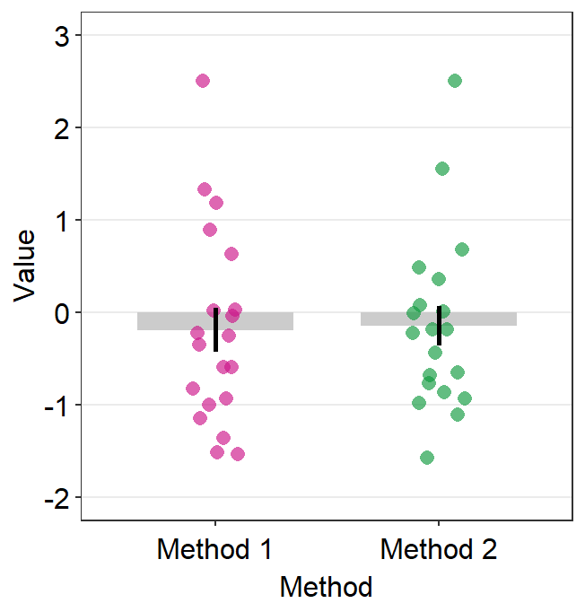
11.6.4 Correlation plot with both regression and reference lines
You can also add a reference line (slope = 1) in a correlation plot.
This can be done with geom_abline(). In this example, the reference line’s slope is set to 1 and it has a dashed line style.
# correlation plot using data frame 'df_corr'
ggplot(data = df_corr, mapping = aes(x = first, y = second)) +
geom_point(
shape = 21, fill = sm_color("crimson"), color = "white",
size = 3
) +
sm_hvgrid(borders = FALSE) +
geom_abline(slope = 1, linetype = "dashed") +
scale_y_continuous(limits = c(-2.8, 2.8), expand = c(0, 0)) +
scale_x_continuous(limits = c(-2.8, 2.8), expand = c(0, 0)) +
sm_statCorr(
color = sm_color("crimson"), fullrange = TRUE,
label_x = -2.2, label_y = 2.3,
linetype = "dashed"
) +
ggtitle("Correlation plot") +
xlab("Method 1") +
ylab("Method 2")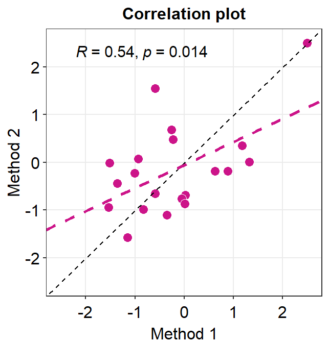
11.7 Boxplot - sm_boxplot()
sm_boxplot() generates a boxplot and individual points at the same time.
- It automatically uses
sm_hgrid()as its default theme.- It also has arguments
bordersandlegendsas part ofsm_hgrid().
- It also has arguments
It has several arguments. To explore them, let’s generate some random data first.
set.seed(1) # generate random data
day1 <- rnorm(16, 0, 1)
day2 <- rnorm(16, 5, 1)
day3 <- rnorm(16, 10, 1)
Subject <- rep(paste0("S", seq(1:16)), 3)
Data <- data.frame(Value = matrix(c(day1, day2, day3), ncol = 1))
Day <- rep(c("Day 1", "Day 2", "Day 3"), each = length(day1))
df <- cbind(Subject, Data, Day)Here is the default boxplot.
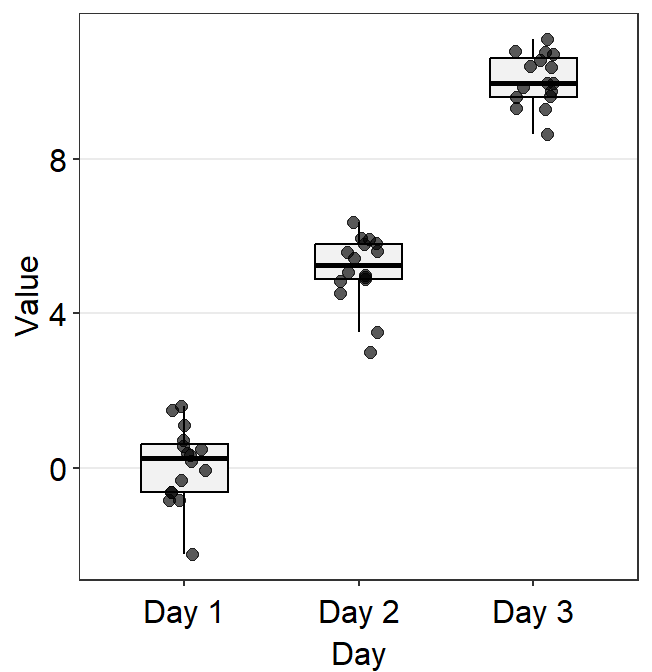
point.paramsends arguments togeom_point()such ascolor,sizeandalphato plot the jittered individual points.boxplot.paramsends arguments togeom_boxplot()such asfill,color,widthandnotchto plot the boxplot.
In this example, ... is fed into point.params to control the color of the points, but not of the boxplot because boxplot.params already has a color default (type ?sm_boxplot to see the defaults).

You can be quite flexible with the aesthetics.
ggplot(data = df, mapping = aes(x = Day, y = Value)) +
sm_boxplot(point.params = list(
fill = sm_color("darkred"),
size = 2.2,
shape = 21,
color = "white",
alpha = 1
))
You can also change the border color of the boxplot and its width using boxplot.params.
ggplot(data = df, mapping = aes(x = Day, y = Value)) +
sm_boxplot(
boxplot.params = list(
color = sm_color("skyblue"),
width = 0.65
),
point.params = list(
alpha = 0.65,
size = 2.5
)
)
Notice that the border color of the boxplot and the fact that outliers are not separately labeled are identical to the default settings because these are kept unless the user re-specifies them. Only the width of the boxplots and their filling colors have been changed because we have specified them by overwriting over the defaults.
Now let’s apply different color for each Day.
ggplot(data = df, mapping = aes(x = Day, y = Value, color = Day)) +
sm_boxplot() +
scale_color_manual(values = sm_color("blue", "darkred", "viridian"))You can change the shape of the boxplot by setting notch = TRUE within boxplot.params.
ggplot(data = df, mapping = aes(x = Day, y = Value, color = Day)) +
sm_boxplot(boxplot.params = list(notch = TRUE, color = "black")) +
scale_color_manual(values = sm_color("blue", "darkred", "viridian"))
A notched boxplot shows the confidence interval around the median (+/- 1.58 * interquartile range / sqrt(n)).
The notches are used for group comparison. -If the notch of each box does not overlap, there is a strong likelihood that the medians are significantly different between groups.
point_jitter_widthlets you control the width of the jitter of the individual points.
ggplot(data = df, mapping = aes(x = Day, y = Value, color = Day)) +
sm_boxplot(point_jitter_width = 0.2) +
scale_color_manual(values = sm_color("blue", "darkred", "viridian"))
11.7.1 Plotting individual points with unique colors
sm_boxplot() can draw individual points with unique colors if you set color = Subject within ggplot().
ggplot(data = df, mapping = aes(x = Day, y = Value, color = Subject)) +
sm_boxplot() +
scale_color_manual(values = sm_palette(16))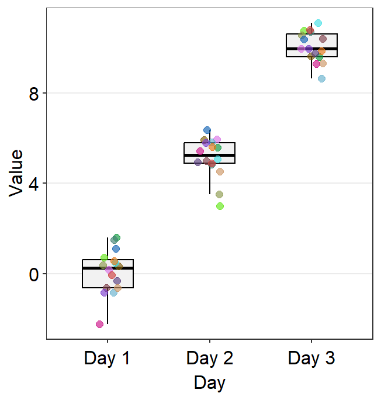
We can increase the size of the points.
ggplot(data = df, mapping = aes(x = Day, y = Value, color = Subject)) +
sm_boxplot(size = 2.2) +
scale_color_manual(values = sm_palette(16))
11.8 Violin Plot - sm_violin()
sm_violin() plots a violin plot, individual points and lines that indicate means and +/- 1 standard deviation at the same time.
- It is very similar to
sm_boxplot()except there is no option fornotch = TRUEinsm_violin(). sm_violin()automatically usessm_hgrid()as its default theme.- It also has arguments
bordersandlegends.
- It also has arguments

# a violin plot with different colored points and lines
ggplot(data = df, mapping = aes(x = Day, y = Value, color = Day)) +
sm_violin() +
scale_color_manual(values = sm_color("blue", "darkred", "viridian"))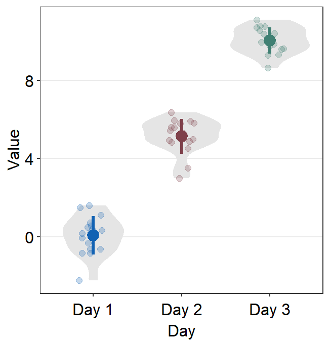
You can specify the aesthetics of sm_violin() using point.params, err.params and violin.params.
point.paramsfeeds the arguments togeom_point(), such ascolor,alpha, etc, to plot the individual points.err.paramsfeeds the arguments togeom_linerange(), such ascolor,sizeetc, to plot the error bar in either standard error (errorbar_type = se), standard deviation (errorbar_type = sd) or 95% confidence interval (errorbar_type = ci).err.paramscan be used to control the average point as well because it is connected to the error bar.
ggplot(data = df, mapping = aes(
x = Day, y = Value, color = Day,
group = Day
)) +
sm_violin(err.params = list(
color = "black",
size = 1.2
)) +
scale_color_manual(values = sm_palette(3))
violin.paramsfeeds the arguments togeom_violin(), such ascolorandfill, to plot the violin.point_jitter_widthlets you control the width of the jitter of the individual points.
ggplot(data = df, mapping = aes(x = Day, y = Value, color = Day)) +
sm_violin(point_jitter_width = 0.2) +
scale_color_manual(values = sm_color("blue", "darkred", "viridian"))points = FALSEremoves all the individual points.
ggplot(data = df, mapping = aes(x = Day, y = Value, color = Day)) +
sm_violin(points = FALSE) +
scale_color_manual(values = sm_color("blue", "darkred", "viridian"))

11.9 Bar plot - sm_bar()
sm_bar() automatically uses sm_hgrid().
- It also has arguments
bordersandlegends, the latter of which has been set toFALSEas default.
Let’s use data (df) we generated before to explore this function.
ggplot(data = df, mapping = aes(x = Day, y = Value, color = Day)) +
sm_bar() +
scale_color_manual(values = sm_color("blue", "darkred", "viridian"))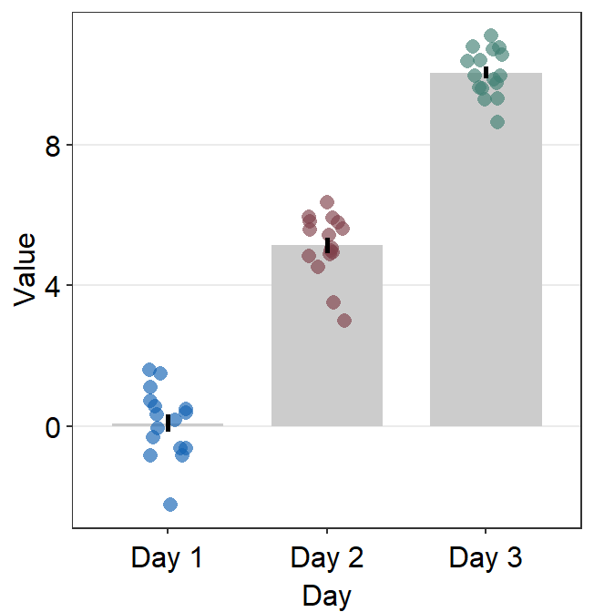
In this case, the error bar represents standard error. If you prefer to show standard deviation, then you should set errorbar_type = 'sd' in sm_bar().
ggplot(data = df, mapping = aes(x = Day, y = Value, color = Day)) +
sm_bar(errorbar_type = "sd") +
scale_color_manual(values = sm_color("blue", "darkred", "viridian"))
95% confidence interval can also be displayed with errorbar_type = 'ci'.
ggplot(data = df, mapping = aes(x = Day, y = Value, color = Day)) +
sm_bar(errorbar_type = "ci") +
scale_color_manual(values = sm_color("blue", "darkred", "viridian"))
Jitter’s width can be controlled using point_jitter_width.
ggplot(data = df, mapping = aes(x = Day, y = Value, color = Day)) +
sm_bar(
errorbar_type = "ci",
point_jitter_width = 0.2
) +
scale_color_manual(values = sm_color("blue", "darkred", "viridian"))
You can also adjust different parameters of the bar graph using bar.params, err.params and point.params.
bar.params = list()sends arguments, such ascolor,fill,widthandalphatogeom_bar()so that a bar is plotted.
ggplot(data = df, mapping = aes(x = Day, y = Value, color = Day)) +
sm_bar(bar.params = list(width = 0.7, alpha = 0.5)) +
scale_color_manual(values = sm_color("blue", "darkred", "viridian"))
err.params = list()sends arguments, such ascolor, togeom_linerange()so that an error bar is plotted.
ggplot(data = df, mapping = aes(x = Day, y = Value, color = Day)) +
sm_bar(
errorbar_type = "sd",
bar.params = list(width = 0.7, alpha = 0.5),
err.params = list(
color = "gray40",
size = 1
)
) +
scale_color_manual(values = sm_color("blue", "darkred", "viridian"))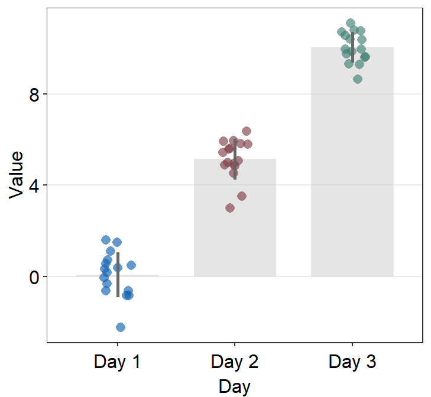
point.params = list()feeds arguments, such ascolor,fill, andalphatogeom_point()to so that individual points are plotted.
ggplot(data = df, mapping = aes(x = Day, y = Value, color = Day)) +
sm_bar(
errorbar_type = "sd",
bar.params = list(width = 0.7, alpha = 0.5),
err.params = list(
color = "gray40",
size = 1
),
point.params = list(
size = 2.5, shape = 15,
alpha = 0.6
)
) +
scale_color_manual(values = sm_color("blue", "darkred", "viridian"))
11.9.1 Plotting individual points with unique colors
As before with sm_boxplot() and sm_violin(), to plot individual points with unique colors, set color = Subject.
ggplot(data = df, mapping = aes(x = Day, y = Value, color = Subject)) +
sm_bar() +
scale_color_manual(values = sm_palette(16))
sm_bar() can also print distinct box colors across distinct x levels. This requires the defaults of bar.params to be reset. Therefore, it needs to be written as bar.params = list() by setting forget = TRUE, which is an argument that makes the function forget its default when list() is called.
If you want the visualization functions to forget their defaults when
list() is called, set forget = TRUE. This is
necessary when you want to map aesthetics to different variables more
flexibly.
ggplot(data = df, mapping = aes(
x = Day, y = Value, color = Subject,
fill = Day
)) +
sm_bar(
bar.params = list(alpha = 0.7, color = "transparent"),
forget = TRUE
) +
scale_color_manual(values = sm_palette(16)) +
scale_fill_manual(values = sm_color("blue", "darkred", "viridian"))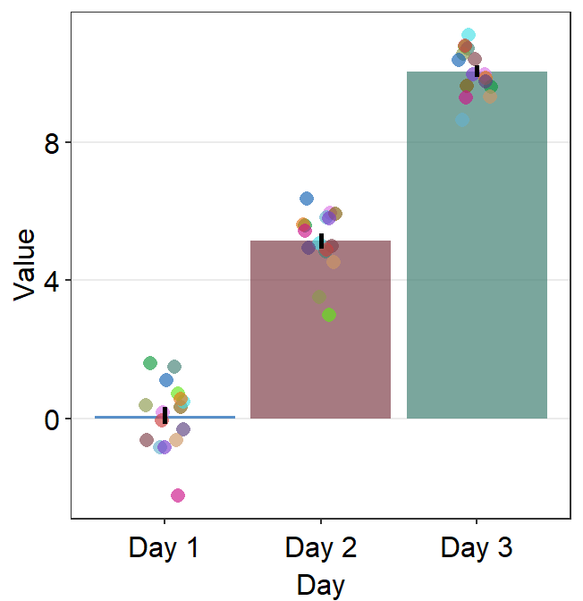
To set one color across all points, you need to remove color = Subject. point.params can be specified to control the aesthetics of the points
ggplot(data = df, mapping = aes(
x = Day, y = Value,
fill = Day
)) +
sm_bar(
bar.params = list(alpha = 0.7, color = "transparent"),
point.params = list(
shape = 21, fill = "gray90",
color = "black", size = 2.2
),
forget = TRUE
) +
scale_fill_manual(values = sm_color("blue", "darkred", "viridian"))
This is an example where the bar and points have unique colors per group.
ggplot(data = df, mapping = aes(
x = Day, y = Value,
fill = Day
)) +
sm_bar(
bar.params = list(alpha = 0.5, color = "transparent"),
point.params = list(
shape = 21, alpha = 1,
size = 2.2,
color = "white"
),
forget = TRUE
) +
scale_fill_manual(values = sm_color("blue", "darkred", "viridian"))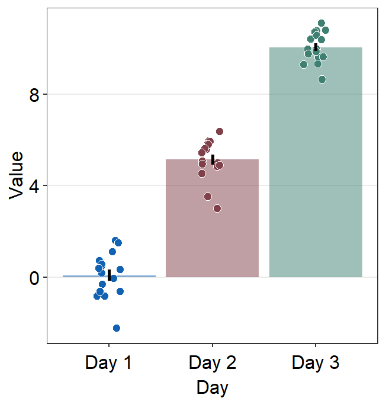